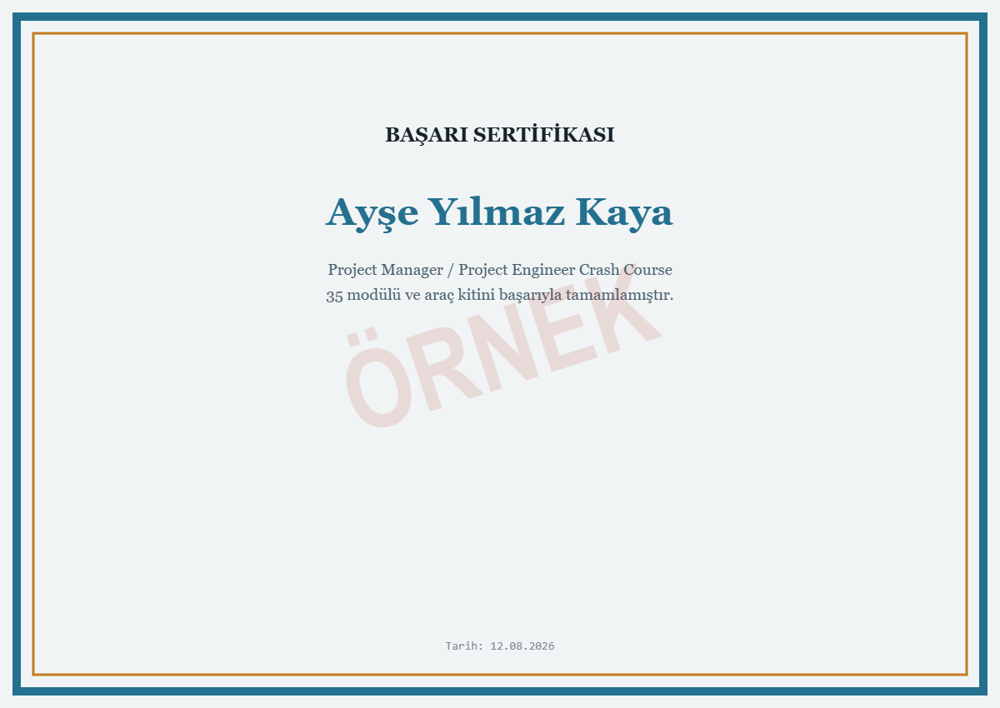

Modül 0 · Giriş
Bu kurs neden var, nasıl çalışır
Bu bir "yeni bilgi öğrenme" kursu değil, hafıza tazeleme kursu. Defence ve IT sektörlerinde ve benzer projelerde bu süreçlerin çoğunun içindeydin; sadece terminolojiyi uzun süredir aktif kullanmıyorsun. Amaç, bu alandaki her sorumluluğu 30–60 saniyede, İngilizce ve örnekle anlatabilecek hale gelmek.
Her modülün sonunda gerçek bir mülakat sorusu ve İngilizce örnek cevap var. Ayrıca Modül 7 mülakat stratejisini, Modül 13 şirket araştırması ve STAR yöntemini, Modül 16 ise görüşme gününün kendisini (öz tanıtım, senaryo soruları, teşekkür e-postası) baştan sona kapsıyor. İstersen içerik sırasını takip etmeden doğrudan bu üç modüle atlayıp mülakat hazırlığına odaklanabilirsin.
Sorumluluk alanları → kurs modülü eşlemesi
| Tipik sorumluluk / yetkinlik | Modül |
|---|---|
| Schedule, milestone, dependency, critical path | Modül 2 |
| Project planning, resource & capacity management | Modül 1 & 2 |
| Technical / operational / feasibility analysis | Modül 1 |
| Budget, cost breakdown structure, financial forecast | Modül 5 |
| Cost monitoring & control | Modül 5 |
| Supplier sourcing, evaluation, qualification | Modül 4 |
| Supplier negotiation (fiyat, lead time, şartlar) | Modül 4 |
| RFQ, bid analysis, PO, contract management | Modül 4 |
| Progress tracking, scope/timeline/cost adherence | Modül 2 & 5 |
| Risk identification & mitigation | Modül 3 |
| Cross-functional coordination | Modül 3 |
| Compliance: standards, quality, regulations | Modül 6 |
| Reporting, dashboards, mülakat sunumu | Modül 7 |
Her modülde önce tanım, sonra savunma ve IT sektöründen somut örnek, sonra gerçek bir mülakat sorusu ve İngilizce örnek cevap var. Araç adını ezberlemek yerine, kararı nasıl verdiğini anlatmayı hedefle: bu fark Modül 7'de detaylı işleniyor.
Hızlı Kontrol
Bu kursun amacı nedir?
Yeni bilgi öğretmek değil, mevcut bilgiyi hafızada tazeleyip 30–60 saniyede örnekle anlatabilir hale getirmek.
Kurs kaç modülden oluşuyor?
35 modül (Modül 0–34): ilk 19 modül (0–18) çekirdek kurs, sonraki 16 modül (19–34) araç kiti şablonları, hesaplayıcıları ve sertifikadır.
Her modülün ortak yapısı nedir?
Tanım, sektörden somut örnek, mülakat sorusu ve İngilizce örnek cevap.
"Araç odaklı değil karar odaklı" yaklaşım hangi modülde detaylı işleniyor?
Modül 7'de.
Sorumluluk-modül eşleme tablosu ne işe yarar?
Tipik PM/PE sorumluluklarının hangi modülde işlendiğini hızlıca bulmayı sağlar.
Modül 1 · Proje Yönetimi Tazeleme
Proje Yaşam Döngüsü
Mülakatın açılış sorusu genelde budur: "Tell me how you manage a project from beginning to end." Cevabı ezberleme: mantığını öğren, kendi projelerinle doldur.
Initiation
Sorulan sorular: Projenin amacı ne? Müşteri kim? Kapsam (scope) ne? Bütçe var mı? Risk var mı? Sponsor kim? Teslim edilecek (deliverable) ne?
Çıktı: Project Charter.
Planning
En kritik aşama. Bu aşamada hazırlanır:
- WBS
- Schedule
- Budget
- Risk Register
- Stakeholder Register
- Procurement Plan
- Communication Plan
- Quality Plan
- Resource Plan
Execution
İşin fiilen yapıldığı aşama: mühendisler çalışır, PCB üretilir, test yapılır, tedarikçi ürün gönderir.
Monitoring & Controlling
Her hafta sorulan kontrol soruları: Planın önünde miyiz, geride miyiz? Bütçe aşıldı mı? Yeni risk oluştu mu? Tedarikçi gecikti mi? Change request geldi mi?
Closing
Son teslim, kabul (acceptance), lessons learned, final report, sözleşme kapanışı, arşivleme.
Hızlı Kontrol
Proje yaşam döngüsünün beş fazı nedir?
Initiation, Planning, Execution, Monitoring & Controlling, Closing.
Initiation fazının çıktısı nedir?
Project Charter.
Planning fazında hazırlanan belgelerden üç tanesini say.
WBS, Schedule, Budget (ayrıca Risk Register, Procurement Plan, Stakeholder Register).
Monitoring & Controlling fazında hangi sorular sorulur?
Plana göre ileride miyiz geride miyiz, bütçe aşıldı mı, yeni risk oluştu mu, tedarikçi gecikti mi.
Planning neden en kritik faz kabul edilir?
İyi bir planlama, sonraki tüm aşamalardaki belirsizliği azaltır.
Modül 2 · Planlama Araçları
WBS, Milestone, Dependency, Critical Path, Baseline
"Detailed project schedules, milestones, dependencies, and critical paths" — bu rolün temel sorumluluklarından birinin karşılığı burası.
Bu modülün tamamı (örnekler, tablolar, mülakat soruları ve hızlı kontrol testi) tam sürümde açılıyor.
Tam Sürümü Satın AlModül 3 · Risk & Değişiklik Yönetimi
Risk Register, Change Request, RAID, Stakeholders
"Identify risks, develop mitigation plans" ve "coordinate cross-functional teams" — bu rolün temel sorumluluklarının karşılığı.
Bu modülün tamamı (örnekler, tablolar, mülakat soruları ve hızlı kontrol testi) tam sürümde açılıyor.
Tam Sürümü Satın AlModül 4 · Satın Alma
Procurement: RFI, RFP, RFQ ve tedarikçi yönetimi
"Manage procurement processes... lead supplier negotiations... execute purchasing activities such as RFQs, bid analysis, purchase orders" — bu sorumlulukların tamamı burada.
Bu modülün tamamı (örnekler, tablolar, mülakat soruları ve hızlı kontrol testi) tam sürümde açılıyor.
Tam Sürümü Satın AlModül 5 · Finans
Bütçe, Maliyet Kontrolü & Finansal Analiz
"Prepare project budgets, cost breakdown structures, financial forecasts" ve "monitor and control project costs" — bu alanın temel sorumlulukları.
Bu modülün tamamı (örnekler, tablolar, mülakat soruları ve hızlı kontrol testi) tam sürümde açılıyor.
Tam Sürümü Satın AlModül 6 · Uyumluluk
Standartlar, Kalite ve Regülasyonlar
"Ensure compliance with internal standards, quality requirements, and relevant regulations" — savunma ve IT sektöründe en çok sorulan konulardan biri.
Bu modülün tamamı (örnekler, tablolar, mülakat soruları ve hızlı kontrol testi) tam sürümde açılıyor.
Tam Sürümü Satın AlModül 7 · Kapanış
Mülakat Stratejisi & Yarının Planı
Şirketler genelde Excel bilen bir mühendis aramaz, proje nasıl yönetilir bilen bir mühendis arar. Excel ve MS Project sadece araç; asıl aranan şey Planning, Risk, Supplier, Cost, Schedule, Coordination.
Bu modülün tamamı (örnekler, tablolar, mülakat soruları ve hızlı kontrol testi) tam sürümde açılıyor.
Tam Sürümü Satın AlModül 8 · Verimlilik
AI araçlarından nasıl faydalanılır
Doğrudan sorulmayabilir ama her mülakatçının aklından geçen soru: "Günlük işini hızlandırmak için AI kullanıyor musun?" Amaç AI'a karar verdirmek değil: tekrarlayan, zaman yiyen işleri AI'a devredip kendi zamanını analiz ve karar vermeye ayırmak.
Bu modülün tamamı (örnekler, tablolar, mülakat soruları ve hızlı kontrol testi) tam sürümde açılıyor.
Tam Sürümü Satın AlModül 9 · İleri Finansal Takip
Earned Value: CPI & SPI
Bütçe sapmasını ve schedule sapmasını aynı anda, tek bir sayısal çerçeveyle ölçmenin adı Earned Value Management (EVM). Modül 5'teki bütçe/cost control temelinin üzerine inşa edilir.
Bu modülün tamamı (örnekler, tablolar, mülakat soruları ve hızlı kontrol testi) tam sürümde açılıyor.
Tam Sürümü Satın AlModül 10 · Uygulamalı Araç
Excel: Project Engineer seviyesi
"Proficiency in MS Office tools (especially Excel and MS Project)" — bu rolün standart beklentilerinden biri. Amaç fonksiyon ezberlemek değil, hangi işte hangi aracı kullanacağını bilmek.
Bu modülün tamamı (örnekler, tablolar, mülakat soruları ve hızlı kontrol testi) tam sürümde açılıyor.
Tam Sürümü Satın AlModül 11 · Uygulamalı Araç
MS Project: kurulumdan takibe
Modül 2'deki WBS/milestone/dependency/critical path/baseline kavramlarının MS Project'te adım adım karşılığı.
Bu modülün tamamı (örnekler, tablolar, mülakat soruları ve hızlı kontrol testi) tam sürümde açılıyor.
Tam Sürümü Satın AlModül 12 · Sektöre Özel
Configuration Management & Sektör Standartları
Modül 6'daki uyumluluk konusunun savunma ve IT sektörlerine özel derinleşmiş hali: konfigürasyon yönetiminin ve sektör standartlarının proje mühendisliğindeki karşılığı.
Bu modülün tamamı (örnekler, tablolar, mülakat soruları ve hızlı kontrol testi) tam sürümde açılıyor.
Tam Sürümü Satın AlModül 13 · Mülakat Hazırlığı
Şirkete özel & İK soruları
Not: Bu kursta hedef şirket hakkında doğrulanmış, güncel bilgi yok: bu yüzden burada gerçek olmayan şirket detayları uydurmak yerine, mülakattan önce kendi araştırmanı yapman için bir çerçeve ve genel davranışsal soru bankası veriyorum.
Bu modülün tamamı (örnekler, tablolar, mülakat soruları ve hızlı kontrol testi) tam sürümde açılıyor.
Tam Sürümü Satın AlModül 14 · Hızlı Tekrar
25 Soru: Türkçe
Modül 1–13'ün tamamını kapsayan hızlı özet tekrarı. Cevabı örtüp kendi kendine sorarak çalış.
Bu modülün tamamı (örnekler, tablolar, mülakat soruları ve hızlı kontrol testi) tam sürümde açılıyor.
Tam Sürümü Satın AlModule 15 · Quick Review
25 Q&A: English
Same coverage as Module 14, in English: practice saying these out loud before the interview.
Bu modülün tamamı (örnekler, tablolar, mülakat soruları ve hızlı kontrol testi) tam sürümde açılıyor.
Tam Sürümü Satın AlModül 16 · Görüşme Günü
Görüşme Gününe Hazırlık
Modül 7 stratejiyi, Modül 13 şirket araştırması ve STAR'ı kapsıyordu. Bu modül görüşmenin kendisinde geçen 45–60 dakikayı (açılıştan teşekkür e-postasına kadar) kapsar.
Bu modülün tamamı (örnekler, tablolar, mülakat soruları ve hızlı kontrol testi) tam sürümde açılıyor.
Tam Sürümü Satın AlModül 17 · Uygulamalı Referans
Excel Formülleri: Data Analizi Referansı
Modül 10'daki Excel temelinin üzerine, 500 satırlık gerçekçi bir satış veri setiyle kurulmuş kapsamlı formül referansı. Amaç, "hangi formülü ne zaman kullanırsın?" sorusuna kategori kategori, örnekle cevap verebilmek.
Bu modülün tamamı (örnekler, tablolar, mülakat soruları ve hızlı kontrol testi) tam sürümde açılıyor.
Tam Sürümü Satın AlModül 18 · Uygulamalı Araç
Jira: Proje Oluşturma, Takip & JQL
"Reporting, dashboards" ve "track project progress" gibi sorumlulukların IT/savunma projelerinde en sık kullanılan aracı. Bu modül proje kurulumundan, günlük takibe ve JQL ile özel sorgu/rapor yazmaya kadar uçtan uca gidiyor.
Bu modülün tamamı (örnekler, tablolar, mülakat soruları ve hızlı kontrol testi) tam sürümde açılıyor.
Tam Sürümü Satın AlAraç Kiti · Referans
PMP Hızlı Referans Kartı
PMI PMBOK sınavına veya bir mülakata dakikalar kala bakabileceğin, 5 süreç grubu × 10 bilgi alanı haritası ve en çok sorulan formüller.
5 Süreç Grubu × 10 Bilgi Alanı
| Bilgi Alanı | Başlatma | Planlama | Yürütme | İzleme & Kontrol | Kapanış |
|---|---|---|---|---|---|
| Entegrasyon | Charter | PM Planı | İşi Yönet | Entegre Değişiklik Kontrolü | Kapanış |
| Kapsam | — | WBS, Gereksinimler | — | Scope Validation/Control | — |
| Zaman | — | Aktivite Sıralama, Süre Tahmini, Takvim | — | Schedule Control | — |
| Maliyet | — | Bütçeleme | — | Cost Control | — |
| Kalite | — | Kalite Planı | Kaliteyi Yönet | Kalite Kontrol | — |
| Kaynak | — | Kaynak Planı | Takımı Geliştir/Yönet | Kaynak Kontrolü | — |
| İletişim | — | İletişim Planı | İletişimi Yönet | İletişimi İzle | — |
| Risk | — | Risk Tanımlama, Analiz, Yanıt Planı | Yanıtları Uygula | Riskleri İzle | — |
| Tedarik | — | Tedarik Planı | Tedarikleri Yürüt | Tedarik Kontrolü | — |
| Paydaş | Paydaş Tanımlama | Katılım Planı | Katılımı Yönet | Katılımı İzle | — |
🧮 Temel Formüller
| CPI = EV / AC | Maliyet verimliliği |
| SPI = EV / PV | Takvim verimliliği |
| CV = EV − AC | Maliyet sapması |
| SV = EV − PV | Takvim sapması |
| EAC = BAC / CPI | Tahmini toplam maliyet |
| ETC = EAC − AC | Kalan tahmini maliyet |
| VAC = BAC − EAC | Kapanışta beklenen sapma |
| PERT = (O+4M+P)/6 | Ağırlıklı 3-nokta tahmini |
| Float = LS − ES | Zamanlama esnekliği |
⚖️ Sözleşme & Risk Notları
| FFP | Sabit fiyat — risk satıcıda |
| CPFF | Maliyet + sabit ücret — risk alıcıda |
| T&M | Zaman & malzeme — küçük/belirsiz kapsam |
| Pozitif risk | Exploit / Enhance / Share / Accept |
| Negatif risk | Avoid / Transfer / Mitigate / Accept |
| Contingency reserve | Bilinen riskler için |
| Management reserve | Bilinmeyen-bilinmeyenler; baseline dışı |
PMI mantığı: her zaman önceden planlamış olan seçeneği işaretle, ilk tepkisel/eskale eden seçeneği değil. Bir risk gerçekleşirse artık bir issue'dur — RAID log'a işlenir ve kontenjans plan devreye girer.
Araç Kiti · Mülakat
Mülakat: Liderlik & Kriz Soru Bankası
Modül 13-16'daki genel mülakat hazırlığına ek olarak, kıdemli PM/PMO pozisyonlarında sorulan liderlik, kriz yönetimi ve çok paydaşlı karar senaryolarına odaklı 12 soru.
Ekibinde iki kişi aynı görevin sahipliği konusunda anlaşamıyor, sen nasıl müdahale edersin?
Önce ayrı ayrı dinler, RACI'de sahipliği netleştirir, gerekirse WBS/görev tanımını güncelleyip her ikisine yazılı olarak teyit ederim.
Kritik bir tedarikçi teslimat tarihini son anda 6 hafta öteledi, ne yaparsın?
Kritik yol etkisini hesaplarım, alternatif tedarikçi/iş etrafından dolaşma (workaround) seçeneklerini değerlendiririm, sponsor ve müşteriyi etki ve seçeneklerle birlikte hemen bilgilendiririm.
Sponsorun istediği bir değişiklik baseline'ı bozuyor; nasıl yönetirsin?
Change request açarım, maliyet/takvim/risk etkisini nicel olarak sunarım, CCB onayı olmadan uygulamam.
Ekip moralinin düştüğünü fark ettin, ilk adımın ne olur?
1:1 görüşmelerle kök nedeni anlarım (iş yükü mü, belirsizlik mi, iletişim mi), sonra somut ve ölçülebilir bir aksiyon planı paylaşırım.
Aynı anda üç proje kritik durumda, önceliklendirmeyi nasıl yaparsın?
İş değeri, sözleşmesel yükümlülük, risk maruziyeti ve stratejik önem kriterleriyle bir önceliklendirme matrisi kurar, sponsordan teyit alırım.
Bir riskin gerçekleştiğini fark ettin ama kimse haberdar değil, ne yaparsın?
Derhal issue log'a işler, etkiyi değerlendirir, ilgili paydaşları ve sponsoru zaman kaybetmeden bilgilendiririm — gizlemek en büyük hata olur.
Üst yönetim projeyi durdurmayı düşünüyor, sen ne sunarsın?
EVM verileri (CPI/SPI), kalan iş, alternatif senaryolar (devam/durdur/yeniden kapsamlandır) ve her birinin maliyet-fayda analizini sunarım.
Yeni bir PM olarak ekibin güvenini nasıl kazanırsın?
Önce dinler, mevcut süreçleri saygıyla öğrenirim, erken küçük kazanımlar sağlarım ve kararlarımı şeffaf gerekçelerle paylaşırım.
İki paydaş çelişen önceliklere sahip, nasıl uzlaştırırsın?
Stakeholder matrisindeki güç/etki konumlarını göz önünde bulundurur, ortak hedefi (proje başarısı) vurgulayarak veriye dayalı bir orta yol öneririm.
Configuration management'te bir sürüm karmaşası yaşandı, nasıl düzeltirsin?
CI listesini denetlerim, doğru baseline'ı tespit ederim, ARAS/PLM gibi araçta düzeltici kayıt açar, kök nedeni önlemek için audit sıklığını artırırım.
Scrum Master iken takım "hız" baskısı hissediyor, nasıl korursun?
Velocity'nin bir hedef değil bir tahmin aracı olduğunu hatırlatır, sprint kapsamını takımla birlikte gerçekçi tutar, süreci hızlandırmak yerine engelleri kaldırırım.
Bir müşteri sözleşme dışı ek talepte bulunuyor, nasıl yanıt verirsin?
Talebi scope creep olarak işaretler, sözleşme kapsamıyla karşılaştırır, ek iş için resmi bir change order/teklif süreci başlatırım.
Araç Kiti · Şablon
Procurement Şablonları
Modül 4'teki RFI/RFP/RFQ kavramlarının doldurulabilir şablon karşılığı: teklif isteme yapısı, tedarikçi skor kartı ve sözleşme tipi karşılaştırması.
RFP/RFQ İskeleti
| Bölüm | İçerik |
|---|---|
| 1. Giriş & Kapsam | Proje özeti, ihtiyaç tanımı, teslim tarihleri |
| 2. Teknik Gereksinimler | Şartname, standartlar (ECSS/MIL-STD vb.), performans kriterleri |
| 3. Ticari Şartlar | Fiyatlandırma formatı, ödeme planı, teslim şartları (Incoterms) |
| 4. Değerlendirme Kriterleri | Ağırlıklandırılmış skor: teknik %, ticari %, süre % |
| 5. Zaman Çizelgesi | Soru-cevap süresi, teklif son tarihi, karar tarihi |
| 6. Sözleşme Ekleri | NDA, garanti şartları, ceza/bonus maddeleri |
Tedarikçi Değerlendirme Skor Kartı (örnek)
| Kriter | Ağırlık | Tedarikçi A | Tedarikçi B |
|---|---|---|---|
| Teknik uygunluk | %35 | 8/10 | 9/10 |
| Fiyat | %25 | 9/10 | 7/10 |
| Teslim süresi | %20 | 7/10 | 8/10 |
| Kalite/sertifikasyon geçmişi | %20 | 9/10 | 8/10 |
| Ağırlıklı Toplam | %100 | 8.15 | 8.05 |
Sözleşme Tipi Karşılaştırması
Araç Kiti · Şablon
RAID Log Şablonu
Risks, Assumptions, Issues, Dependencies — tek tabloda proje "hafızası". Aşağıda dolu bir örnek var; kendi projen için satırları çoğaltman yeterli.
Bu modülün tamamı (örnekler, tablolar, mülakat soruları ve hızlı kontrol testi) tam sürümde açılıyor.
Tam Sürümü Satın AlAraç Kiti · Şablon
Risk Register (5×5 Olasılık/Etki)
ECSS-uyumlu 5×5 olasılık/etki matrisi ve puanlama mantığı. Skor = Olasılık × Etki; 15-25 yüksek, 6-14 orta, 1-5 düşük risk bandı.
Bu modülün tamamı (örnekler, tablolar, mülakat soruları ve hızlı kontrol testi) tam sürümde açılıyor.
Tam Sürümü Satın AlAraç Kiti · Şablon
Stakeholder Matrisi
Power/Interest 2×2 grid ile paydaşları dört kadrana yerleştir, sonra her biri için katılım stratejisini kayıt altına al.
Bu modülün tamamı (örnekler, tablolar, mülakat soruları ve hızlı kontrol testi) tam sürümde açılıyor.
Tam Sürümü Satın AlAraç Kiti · Şablon
İletişim Planı Şablonu
"Kime, ne, ne zaman, nasıl?" sorularını tek tabloda cevaplayan iletişim planı — paydaş matrisiyle birlikte kullanılır (Modül 24).
Bu modülün tamamı (örnekler, tablolar, mülakat soruları ve hızlı kontrol testi) tam sürümde açılıyor.
Tam Sürümü Satın AlAraç Kiti · Şablon
WBS Şablonu
Bir uydu alt sistemi / yazılım projesi örneğiyle 3 seviyeli iş kırılım yapısı (Work Breakdown Structure).
Bu modülün tamamı (örnekler, tablolar, mülakat soruları ve hızlı kontrol testi) tam sürümde açılıyor.
Tam Sürümü Satın AlAraç Kiti · Şablon
Cost Baseline & S-Curve Şablonu
Dönemsel ve kümülatif maliyet planı, S-eğrisi mantığıyla. EVM'de PV çizgisinin temeli budur (bkz. Modül 9).
Bu modülün tamamı (örnekler, tablolar, mülakat soruları ve hızlı kontrol testi) tam sürümde açılıyor.
Tam Sürümü Satın AlAraç Kiti · İnteraktif Hesaplayıcı
🧮 Critical Path Calculator
Görevleri, sürelerini ve öncüllerini (predecessor) gir; araç ileri/geri geçiş (forward/backward pass) yaparak erken/geç başlangıç-bitiş, bolluk (float) ve kritik yolu hesaplasın. Aşağıda örnek bir zamanlama önceden dolduruldu — düzenleyip kendi verinle deneyebilirsin.
Bu modülün tamamı (örnekler, tablolar, mülakat soruları ve hızlı kontrol testi) tam sürümde açılıyor.
Tam Sürümü Satın AlAraç Kiti · İnteraktif Hesaplayıcı
📈 Earned Value Calculator
PV, EV, AC ve BAC değerlerini gir; CPI, SPI, CV, SV, EAC, ETC, VAC ve TCPI otomatik hesaplansın (formüller Modül 9 ve Modül 19'da).
Bu modülün tamamı (örnekler, tablolar, mülakat soruları ve hızlı kontrol testi) tam sürümde açılıyor.
Tam Sürümü Satın AlAraç Kiti · Kütüphane
AI Prompt Kütüphanesi
PM işlerinde günlük kullanılan, kopyala-yapıştır hazır 18 prompt. "Kopyala" butonuyla panoya alıp ChatGPT/Claude gibi bir asistana yapıştırabilirsin.
Bu modülün tamamı (örnekler, tablolar, mülakat soruları ve hızlı kontrol testi) tam sürümde açılıyor.
Tam Sürümü Satın AlAraç Kiti · Referans
Jira Cheat Sheet
Modül 18'deki Jira kurulum/JQL anlatımının hızlı referans kartı: sık kullanılan JQL sorguları, klavye kısayolları ve issue hiyerarşisi.
Bu modülün tamamı (örnekler, tablolar, mülakat soruları ve hızlı kontrol testi) tam sürümde açılıyor.
Tam Sürümü Satın AlAraç Kiti · Referans
Scrum Cheat Sheet
Scrum'ın 3 rolü, 5 event'i, 3 artifact'ı ve Definition of Done/Ready kontrol listeleri.
Bu modülün tamamı (örnekler, tablolar, mülakat soruları ve hızlı kontrol testi) tam sürümde açılıyor.
Tam Sürümü Satın AlAraç Kiti · Şablon
PMO Dashboard Şablonu
Bir portföyün genel sağlığını tek ekranda özetleyen örnek bir PMO panosu: KPI kartları + RAG (Kırmızı/Sarı/Yeşil) durum tablosu.
Bu modülün tamamı (örnekler, tablolar, mülakat soruları ve hızlı kontrol testi) tam sürümde açılıyor.
Tam Sürümü Satın AlAraç Kiti · Tamamlama
🎓 Sertifika
Tüm 35 modülü tamamladığında adına özel, indirilebilir bir başarı sertifikası oluşturuluyor. Örneği aşağıda:

Sertifika, tam sürümde tüm modülleri tamamladığında adına otomatik oluşuyor ve PNG olarak indirilebiliyor.
Tam Sürümü Satın Al